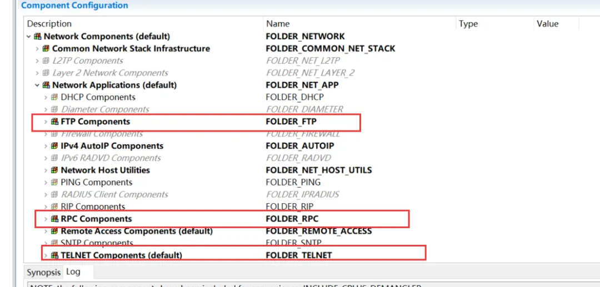
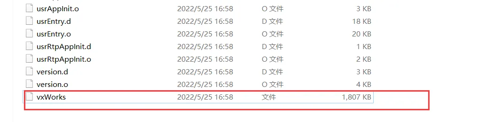

VxWorks 操作系统是美国WindRiver公司于1983年设计开发的一种嵌入式实时操作系统（RTOS），是嵌入式开发环境的关键组成部分。良好的持续发展能力、高性能的内核以及友好的用户开发环境，在嵌入式实时操作系统领域占据一席之地。它以其良好的可靠性和实时性被广泛地应用在通信、军事、航空、航天等高精尖技术及实时性要求极高的领域中，如卫星通讯、军事演习、弹道制导、飞机导航等。在美国的 F-16、FA-18战斗机、B-2 隐形轰炸机和爱国者导弹上，甚至连1997年4月在火星表面登陆的火星探测器、2008年5月登陆的凤凰号，和2012年8月登陆的好奇号也都使用到了VxWorks。
多年来，VxWorks®实时操作系统（RTOS）成功搭载数十亿台安全关键型智能设备、机器和系统，获得全球行业领导者一致认可。从如今运行在“红色星球”上的洞察号火星探测器（Insight），到医用输液泵和成像系统、制造机器人以及其他物联网（IoT）嵌入式设备，VxWorks屡次被选为创新解决方案，安全、可靠地应用于航空航天与国防、汽车、工控、医疗和交通运输行业。
VxWorks操作系统由以下部件组成：
- 内核
- 多任务调度（采用基于优先级抢占方式，同时支持同优先级任务间的分时间片调度）
- 任务间的同步
- 进程间通信机制
- 中断处理
- 定时器和内存管理机制
- IO 系统
VxWorks 提供了一个快速灵活的与 ANSI C 兼容的 I/O 系统，包括 UNIX 标准的Basic I/O (creat(),remove(),open(),close(),read(),write(),and ioctl())，Buffer I/O (fopen(),fclose(),fread(),fwrite(),getc(),putc()) 以及POSIX 标准的异步 I/O。VxWorks 包括以下驱动程序：网络驱动、管道驱动、RAM盘驱动、SCSI驱动、键盘驱动、显示驱动、磁盘驱动、并口驱动等 。
- 文件系统
- 支持四种文件系统: dosFs，rt11Fs，rawFs 和 tapeFs
- 支持在一个单独的 VxWorks 系统上同时并存几个不同的文件系统。
- 板级支持包 BSP（Board Support Package）
板级支持包向VxWorks操作系统提供了对各种板子的硬件功能操作的统一的软件接口，它是保证VxWorks操作系统可移植性的关键，它包括硬件初始化、中断的产生和处理、硬件时钟和计时器管理、局域和总线内存地址映射、内存分配等等。每个板级支持包包括一个 ROM 启动（Boot ROM）或其它启动机制。
- 网络支持
它提供了对其它VxWorks系统和TCP/IP网络系统的"透明"访问，包括与BSD套接字兼容的编程接口，远程过程调用（RPC），SNMP（可选项），远程文件访问（包括客户端和服务端的NFS机制以及使用RSH，FTP 或 TFTP的非NFS机制）以及BOOTP 和代理ARP、DHCP、DNS、OSPF、RIP。无论是松耦合的串行线路、标准的以太网连接还是紧耦合的利用共享内存的背板总线，所有的 VxWorks 网络机制都遵循标准的 Internet 协议。
构建边缘计算系统的未来
VxWorks是一款具有确定性、高性能实时操作系统，它为必须满足最高标准的任务关键型设备和系统确立了可扩展、永不过时、安全可靠的操作环境标准。
实时：VxWorks是一款确定性、基于优先级的抢占式实时操作系统，具有低延迟和最小抖动，因此非常适合硬实时嵌入式应用。除标准抢占外，VxWorks还可通过各种调度以及时间和空间分区来确保安全关键及时间关键型应用程序获得预定数量的CPU周期，为各行各业提供所需的灵活功能。永不过时：尽管VxWorks不断添加新的特性和功能，兼容性始终摆在首位，这是因为风河®竭力保护并确保客户投资的软件和工具永不过时。兼容性使得开发人员能够利用VxWorks最新版本，快速添加新功能并进行升级，而无需对整个系统重新测试，从而节省了项目时间和成本。广泛的多核和多处理支持：VxWorks支持32位、64位以及多核处理器，包括Intel®，Arm®和PowerArchitecture®。其全面的多核处理器支持使得OS配置能够用于非对称多处理（AMP）和对称多处理（SMP），并具有绑定多处理（BMP）的CPU亲和性。广泛的板级支持：通过与我们的生态系统合作伙伴共同开发，VxWorks拥有最广泛的嵌入式软件行业的板级支持包（BSP），可实现早期原型设计，节省成本的同时提供灵活的选择。为了满足对廉价硬件快速原型设计需求，VxWorks在GitHub上提供了开源 BSP，最早先支持树莓派（Raspberry Pi）。稳健性和调优性：VxWorks的模块化特性便于根据需要选择和调整功能，仅在需要时更改模块。 （更改先前认证的应用程序中使用的 VxWorks代码时，可能需要重新评估认证。）虚拟化：VxWorks能够在诸如风河® Helix™ Virtualization Platform等虚拟化环境中或者结合QEMU、VMware和KVM等常见的 hypervisor，具有高效、接近本地的性能。HelixPlatform包含可认证、嵌入式类型 的hypervisor，与其他难以认证的hypervisor相比，它可以节省时间和精力，并且还将与其他操作系统一起运行 VxWorks。容错文件系统：VxWorks支持风河Highly Reliable File System（HRFS），以在系统错误和关闭的情况下容错和恢复操作，以及兼容FAT的dosFS文件系统。混合操作系统支持：VxWorks支持使用OpenAMP在混合环境中与其他操作系统进行通信，从而使得开发人员能够跨VxWorks实时环境和其他非实时环境构建交互式功能。 多媒体：VxWorks支持多种标准图形库，例如OpenGL、 OpenGL ES、OpenCV和Vulkan，以及处理JPEG和PNG图像的库。
在虚拟机上安装VxWorks #
安装版本：
VxWorks 6.8.3 + Workbench 3.2.3 + VMWare 16 + MS-DOS 6.22 软盘版
按照FTP连接的主机和目标机，将整个VxWorks6.8的安装分为两个部分:
- 一是在主机（win10系统，可以使用虚拟机或者实体机，推荐使用虚拟机）上安装Workbench3.2，进行bootrom与VxWroks映像文件的生成
- 二是在虚拟机上安装VxWorks系统
Workbench3.2安装 #
以下操作在win10虚拟机上进行
准备工作：
先关闭UAC。
在Windows中搜索UAC
搜索网络连接设置，选择其中的有线网卡（不能用也没关系，主要是有线网卡就可以）。右键点击属性菜单。
然后点击配置按钮，弹出配置界面，点击高级子界面
打开资源包中的WRSLicenseWH701-VX-2Hypervisor.lic文件，找到这里：
复制里面的hostid=字段的内容，16位MAC地址字符串。如果不是16位MAC地址而是字符串ANY，表示此证书并未绑定网卡MAC地址，不限制网卡。
填入如下位置：
开始安装：
- 安装UItraISO（其他加载工具也可以）。运行uiso9_cn.exe，一路默认安装UItraISO，注意选择附加任务时三项都要勾选，尤其是“安装虚拟ISO驱动器”（默认三项都勾选）
- 加载DVD-R175636.1-1-00到虚拟光驱，接着打开所加载的虚拟光驱，运行setup程序；
安装过程没有特别描述的都以默认选项进行； 这一步将Check都取消勾选
- 这一步选择Permanent activation（永久激活），将所给的.lic文件（证书）导入
- 其余都用默认选项，选择Next即可，最后等待安装完成
编译BSP
- 找到WorkBench的安装目录，目录名为WindRiver，找到vxworks-6.8目录，进入找到target目录，进入找到config目录，进入找到pcPentium4目录
将“修改及增加文件”文件夹内提供的文件复制粘贴到Pentium4目录内，已有文件全部覆盖
需要修改以下文件，这里直接将修改好的复制过来。
- 打开config.h文件，定位到定义 DEFAULT_BOOT_LINE 宏的地方。修改预处理条件 CPU = = PENTIUM4 分支下的定义如下：
这里的h（host）地址表示你的主机IP地址，可以先修改为主机IP地址，或者随便填一个IP地址，之后修改主机地址为该地址，e（target）地址表示VxWorks系统目标机的IP地址，只需要和主机IP地址在同一个网段内即可，u=target pw=target是FTP下载的用户名和密码,都可以根据自己实际情况修改，最好使用target，简单易记。
- 打开Workbench3.2，Workspace就选择WindRiver目录下的workspace目录
- File->New->Wind River Workbench Project，选择Wind River VxWorks 6.8，然后Next
-
Build type选择Boot Loader / BSP Project，然后Next
-
Project name任取，最好与BSP相关，Location选择默认的in workspace，然后Next
-
Board support package选择步骤2中经过修改的Pentium4目录，Tool chain选择gnu，勾上Copy files to project，然后Finish
-
右键选中项目，选择Build Project或者Rebuild Project进行构建
-
构建完成后，右键选中项目，选择Open Wind River VxWorks 6.8 Development Shell，打开命令行，cd进入Pentium4目录后，输入make bootrom.bin命令，将生成bootrom.bin文件
-
找到workspace目录，找到该项目目录，在项目目录下找到Pentium4目录，进入并找到生成的bootrom.bin，复制出来，并修改后缀名为.sys，后续该文件作为引导程序
-
找到vxload.com和vxsys.com两个文件（手动搜索，或者一般在XX\WindRiver\vxworks-6.8\host\x86-win32\bin目录下），与上一步得到的bootrom.sys放在一起，以待后续使用
生成VxWorks镜像
根据具体需要在命令行环境下利用Makefile创建各种镜像，也可以在Tornado的集成环境下Build菜单中选择Build Boot ROM来创建各种类型的Boot ROM；
除此以外，如果系统硬件包括串口，还要根据具体情况修改sysSerial.c文件；如果包含网络部分要修改configNet.h；如果包含NVRAM要修改bootnv.h文件。总之，BSP的开发要根据具体目标板的硬件进行。
-
打开Workbench3.2，Workspace就默认为WindRiver目录下的workspace目录
-
File->New->Other，在Wizards内输入VxWorks image查找并选择VxWorks Image Project，然后Next
-
Project name任取，最好与Image相关，Location选择默认项in workspace，然后Next
-
Based on选择an existing project，Project中将显示此时workspace中的项目，选择第2章节中创建好的BSP项目，然后Finish
-
如果需要额外开启各种服务，则需要在VxWorks Image的编译工程的Kernel Configuration中添加组件
 还可以进行一些配置，例如TELNET组件： -
组件添加完成后，右键选中项目，选择Build Project或者Rebuild Project构建
-
在workspace目录下，找到该项目目录，进行default目录，进入并找到生成的vxWorks以及vxWorks.sym，复制出来，后续这两个文件将作为VxWorks系统文件通过FTP引导系统

但是我这里并没有生成vxWorks.sym文件，不知道为什么…不过后面并没有影响
VxWorks虚拟机安装 #
-
首先使用DOS622镜像文件创建虚拟机，镜像文件格式为IMG，大小为1.44MB，软盘的大小。
-
使用VMware，新建虚拟机->典型->稍后安装操作系统->其他（MS-DOS）->自定义名称（默认为MS-DOS）和位置->使用默认最大磁盘大小2GB，将虚拟磁盘存储为单个文件->完成
-
打开上一步创建的虚拟机设置，在硬件部分“添加”“软盘驱动器”
- 软盘添加“完成”后，选择软盘，勾选“启动时连接”，以及“使用软盘映像文件”，并点击“浏览”选择提供的DOS662.img文件


这里我只生成了vxWorks
- 由于前面我们配置了RPC、TELNET、FTP组件，所以扫描可以看到对应的开放端口

漏洞测试 在上一部分，我们已经搭建成功了 VxWorks 6.8.3 + VxWorks Workbench 3.2.3
下面进行一些已知漏洞测试
urgent11
该工具以 TCP 和 ICMP 指纹的形式对目标主机实施 4 种独特的检测方法。通过计算所有方法得分的总和，我们可以高精度地确定设备是否运行依赖于 IPnet TCP/IP 堆栈的操作系统以及该操作系统是否为 VxWorks。此外，我们还测试了主机是否容易受到 CVE-2019-12258 的攻击，这是影响所有使用 IPnet 的 VxWorks 版本的 URGENT/11 漏洞之一。如果检测到设备在 VxWorks 上运行 IPnet，并且不受此 CVE 的攻击，则可以推断该设备已针对 URGENT/11 漏洞进行了修补。
对上面搭建的环境进行测试，可以发现没有修补漏洞：
CVE-2019-9865
VxWorks的RPC组件存在此漏洞。有关漏洞的详细信息可以在这里找到。
在 6.9.1 之前的 Wind River VxWorks 6.9 中启用 RPC 时，特制的 RPC 请求会触发整数溢出，从而导致内存复制越界。它可能允许远程攻击者导致拒绝服务（崩溃）或可能执行任意代码。
复现：
这里搭建的是6.8版本，不存在漏洞
修改poc.py里面的host地址：
CVE-2019-12255
VxWorks的IPnet栈存在此漏洞。有关漏洞的详细信息可以在这里找到。
PoC可以使VxWorks任务(设置与PoC中任务对应的端口)崩溃，例如telnet、ftp等。
影响版本：6.5 ≤ VxWorks<6.9.4
复现：
修改poc.py里面的ip和dport
运行:
#当OS收到非请求报文时，会发送RST (reset)报文。我们可以使用iptables来避免这种情况。
iptables -A OUTPUT -p tcp --tcp-flags RST RST -s 192.168.111.134(攻击者ip) -j DROP
#运行POC
python3 poc.py
CVE-2019-12260
此 PoC 使用 TCP 身份验证选项 (TCP-AO) 发送数据包
iptables -A OUTPUT -p tcp --tcp-flags RST RST -s 172.18.101.121 -j DROP
python3 poc.py
CVE-2010-2965
VxWorks wdbrpc远程代码执行漏洞
VxWorks 6.x, 5.x和之前版本中的WDB目标代理调试服务中存在权限许可和访问控制漏洞。远程攻击者可以借助向UDP 17185端口发送的请求读取或修改任意存储单元，执行函数调用，从而造成任意代码执行。
WDB RPC有V1和V2两个版本，VxWorks 5.5中使用V1版本，而VxWorks 6.6中使用V2版本，V2版本相较于V1版本有较多处修改，具体体现在协议字段及交互方式。以上这些脚本都是针对WDB RPC V1